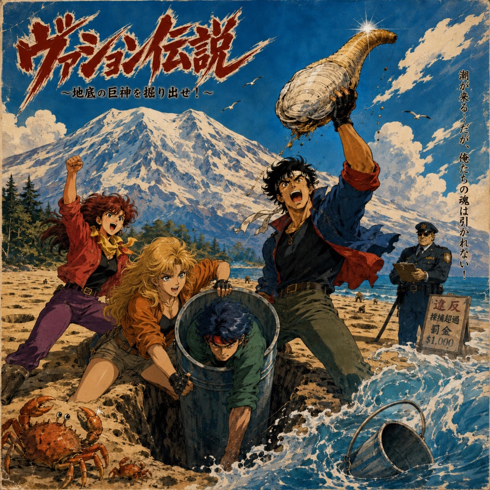
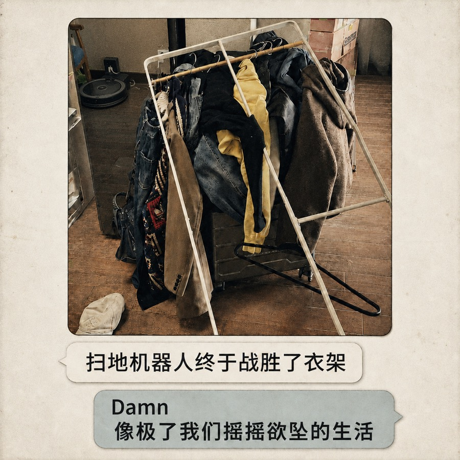

关于
半熟的代码，刚刚好的声音。
medium rare code / 半熟代码是一个独立音乐项目。作品从生活里的具体片段出发： 异乡与归途、海边与雪山、宠物、朋友，以及那些像程序变量一样不断变化的情绪。
本站收录正式发行的单曲与专辑、歌曲背景和官方音乐平台入口。你可以从下方浏览全部作品， 或选择常用平台继续收听。
专辑

单曲
Legend of Vashon: Unearthing the Geoduck（瓦雄传说～地底巨神讨伐录～）
这是一部用交响力量金属谱写的赶海血泪史。记录了四位勇士在瓦雄岛为了捕获史诗级巨型象拔蚌，惨遭170刀罚款，并最终被大海无情吞噬了一个水桶的荒诞传奇。极致的重金属编曲与极度倒霉的现实碰撞，为你带来这首硬核的太平洋西北海岸镇魂曲。 Legend of Vashon: Unearthing the Geoduck ヴァション伝説 〜地底巨神討伐録〜 瓦雄传说～地底巨神讨伐录～



单曲
Razor Sharp（爆桶）
我们是 razor clam大 pro！ Oh yeah! 爆桶！爆桶！绝无空军的 title！ 看准小沙眼铲子一挥管你躲多深通通带走 七十！八十！数到手抽筋嘴角疯狂上疯狂上翘 今天这片海滩上我们绝对是最嚣张的崽！

单曲
Snow Check, Not Today
我只想 抱着自由 不想提前交卷 在这 快节奏的时代 留一点点空间 没经过 他的允许 怎敢 让他出现？ 万一他 也不想 参与这 疲惫的冒险 不去 轻易打扰 是我 给的成全 我自己的 剧本 还要 慢慢地翻篇


单曲
Powder Flu（请病假去滑雪才是一件很嘻哈的事情）
请个假去滑雪 是一场浪漫的逃亡 不管什么kpi 把它留在没雪的橱窗 换上我的雪板 冲向白色的乌托邦 这才是属于我们 独家的疯狂


单曲
Rain of Two Cities（雨的两座城）
从太平洋西北岸如旧棉被般的温柔，到旧街巷里那种狂野的泥土芬芳。这首歌拒绝了常人眼中“加州阳光”式的明媚，转而拥抱一种更真实、更有质感的灰色。 当世界都在追逐晴朗，我们是否忽略了雨水带来的宁静？ 在喧嚣的白噪音中，有人听到了烦躁，而有人听到了归属。 这就不仅是一次对天气的记录，更是一次关于“内心秩序”的重建。 雨后的清香，胜过一切虚假的晴朗。

EP
Six Tails of Christmas（平安夜的尾巴）
本张专辑收录了来自平安夜的真实采样：壁炉的燃烧声、酒杯的碰撞声，以及狗狗们均匀的呼吸声。没有复杂的编曲，只有最纯粹的 Chill 节奏。 Olly / Mochi / Mango(x2) / Doge / Lucky —— 它们是今晚的主角，也是这几首歌的灵感缪斯。 戴上耳机，Lay it back。 把烦恼留在门外，今晚我们只负责放松。

单曲
Shadow of the Snout（长吻之影：审判降临）
谁说长脸狗狗不能拥有自己的 Boss Fight BGM？Lucky 和 Oreo 化身古神，带给你来自“车座子”的终极压迫感。颤抖吧螃蟹！ #EpicMusic #Sheltie #Iggy #Funny #NewMusic